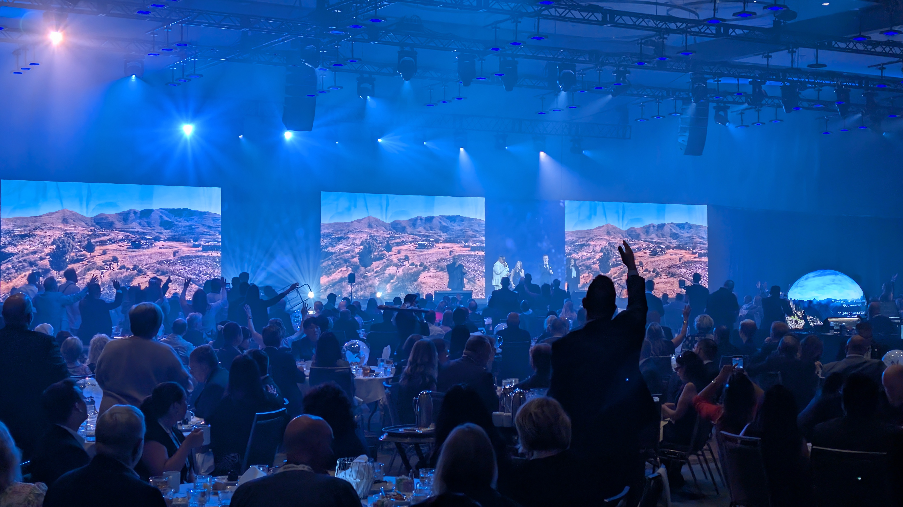
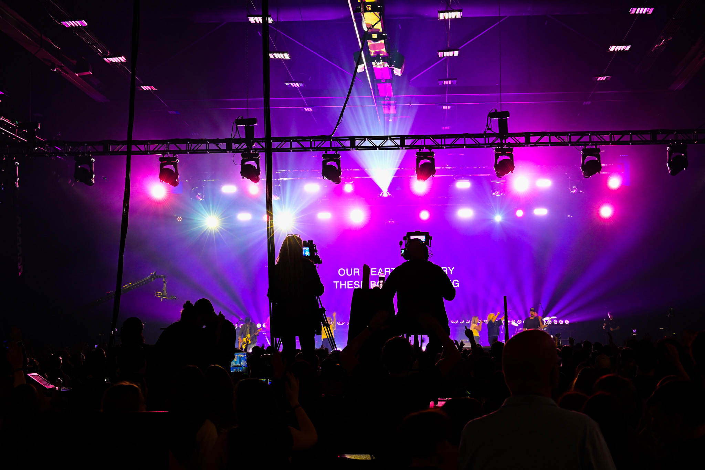
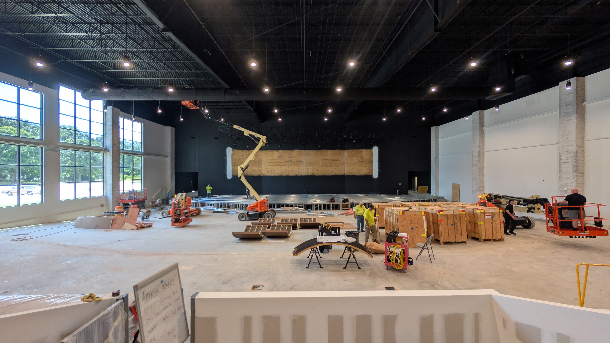

High-reliability live event production and permanent architectural AVL integration. Designed, staged, and delivered with zero room for failure.
Arena-scale corporate conferences, arena tours, and festival stages. We deliver high-impact audio, fine-pitch LED volumes, dynamic lighting, and broadcast video systems pre-racked and soak-tested.
Houses of worship, auditoriums, and commercial facilities. We handle everything from structural acoustic modeling and precision line arrays to custom laser-labeled rack fabrication and staff training.
Pre-configured, soak-tested inventory packages for touring crews, regional houses, and technical directors needing zero-failure sub-rentals to meet rider specifications.
Recent Builds & Show Operations
Click any deployment to inspect the engineering telemetry.

Turnkey arena audio, 60-foot fine-pitch LED video wall, synchronized lighting, and zero-latency broadcast splits.
View Blueprint →
Shock-mounted fly-pack road racks, automated hitless power conditioning, and networked RF telemetry.
View Blueprint →
Structural acoustic tuning, permanent fine-pitch LED array, core-alignment fusion-spliced singlemode fiber.
View Blueprint →Zero single-point-of-failure routing. Rigorous power isolation, calibrated telemetry, and enterprise optical trunks.
Discrete Primary and Secondary network fabrics configured across dedicated AV-line managed switches with automated hitless failover on all mission-critical audio and control streams.
Single-mode Neutrik opticalCON multi-channel tactical trunks terminated and verified with calibrated return-loss testing to maintain uncompressed 4K video and low-jitter audio distribution.
Multi-stage power conditioning and isolated harmonic suppression across every fly-pack and distribution rack, protecting sensitive DSP and LED processing from dirty venue feeds.
Interactive Rack Architecture & Signal Topology
Core AV-over-IP Backbone
Enterprise managed layer-2/layer-3 switch pre-configured for zero-configuration Dante, AES67, and video over IP. Dual 10G SFP+ singlemode fiber uplinks feed stage drops and FOH surfaces with hardware VLAN segregation.
Primary and Secondary Dante trunks are strictly air-gapped on separate VLAN IDs with IGMP Querier enabled to prevent broadcast flooding.
We maintain dedicated sub-rental packages for regional production companies and touring directors. All fly-packs ship fully pre-patched, bench-tested, and updated to the latest stable firmware.
Start Your Project Intake
An engineer from our Cleveland, TN facility will review your specs and follow up within one business day.